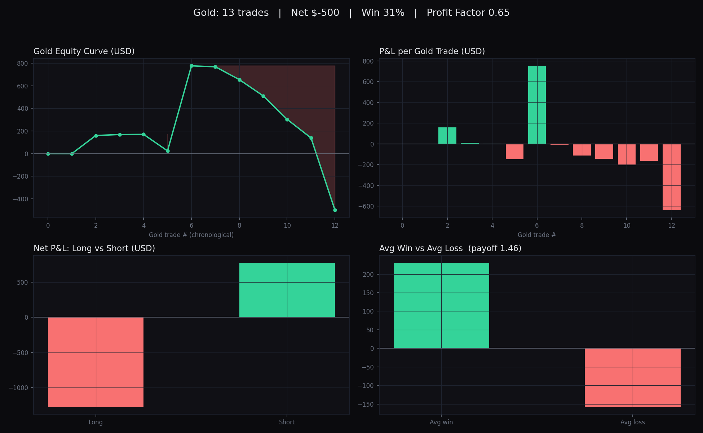

An Autopsy of a Losing Book: What My Gold Trades Taught Me
Most trading content celebrates winners. This is not that.
Over the past seven months I ran a paper-trading account, and when I finally sat down to audit it rather than trade it, the verdict was unambiguous. I had been losing, and gold was the worst of it. What surprised me was not the loss. It was the reason behind it, which I never would have found by trusting my instincts.
One note on context, because intellectual honesty is the whole point of this exercise: every figure below comes from a simulated account, not real capital. The dollar amounts are notional. What they measure, however, is entirely real, namely my decisions, my discipline, and the quality of my process.
I scaled back my trading a while ago, and the reason was a feeling. The whole endeavor had begun to resemble gambling more than investing. I was taking positions across nearly a dozen instruments, gold, crude oil, Nasdaq futures, silver, Bitcoin, and a handful of equities, with inconsistent sizing and no genuine thesis behind most of them. Stepping back felt correct, but a feeling is not evidence. So I did what I should have done at the outset: I interrogated the data. I exported my complete order history and wrote a Python tool to reconstruct every completed trade, pairing each entry with its exit and converting raw fills into profit and loss. Then I isolated the instrument I traded most, gold, and put it under a microscope.
The headline figures were sobering. Across 13 completed gold trades, I finished down roughly $500. My win rate was 31%. My profit factor, the ratio of gross profits to gross losses, came to 0.65, which means I lost about a dollar and a half for every dollar I earned. My expectancy was negative $38 per trade. Stated plainly, the average gold trade I placed was a money-losing decision. A negative-expectancy strategy is not a strategy. It is a leak.
But the audit justified itself the moment I broke the losses down, because they were not random noise. They were concentrated almost entirely on one side of the market. Every time I went long gold, I lost. Not most of the time. Every time. Six long positions, zero winners, a combined loss of roughly $1,275. My short positions, by contrast, were actually profitable: seven trades, a 57% win rate, and a net gain near $775. The entirety of my gold loss traced back to a single repeated error, buying an instrument I evidently could not read from the long side.

I want to be disciplined about this claim. Six trades is a small sample, and I will not pretend that "zero percent on longs" is an immutable law rather than a strong signal carrying some element of bad luck. But going zero for six, with my single largest loss of the entire set being a long position, is not a result you wave away as variance. It is a blind spot. And it was completely invisible to me in real time, because in the moment, each long felt justified.
The real lesson was not simply that I trade gold poorly, though that is a fair reading. It concerned the distance between intuition and evidence. While I was placing those trades, my instinct registered only that something felt wrong. It could not tell me what. It took a few hundred lines of Python and a willingness to confront my own record to surface a pattern that, in hindsight, was glaring. That distance, between what I sensed and what was actually occurring, is the difference between operating on conviction and operating on data. Every serious market participant, from a discretionary trader to a quantitative fund, lives on the data side of that line. I had been on the other one.
Three principles emerged that I intend to carry forward. First, attribution matters more than the bottom line. A net result tells you whether you won or lost. An honest breakdown tells you why, and the why is the only part you can actually act on. Second, sample size is not optional. Distributing a handful of trades across ten instruments guarantees you can never learn anything statistically meaningful about any one of them. Depth beats breadth. Third, recognizing when to step away is itself a skill. I was fortunate to learn it on a simulated account at sixteen, rather than with real capital a decade from now.
I am not presenting a winning system, because I did not have one. I am presenting the process of discovering that, and that process, sitting with my own losing record and refusing to look away, taught me more about how markets actually function than any profitable trade ever did. The objective was never to prove I could trade. It was to learn to reason rigorously about risk, evidence, and my own decisions. Measured against that goal, the losing book may be the most useful thing I have produced.